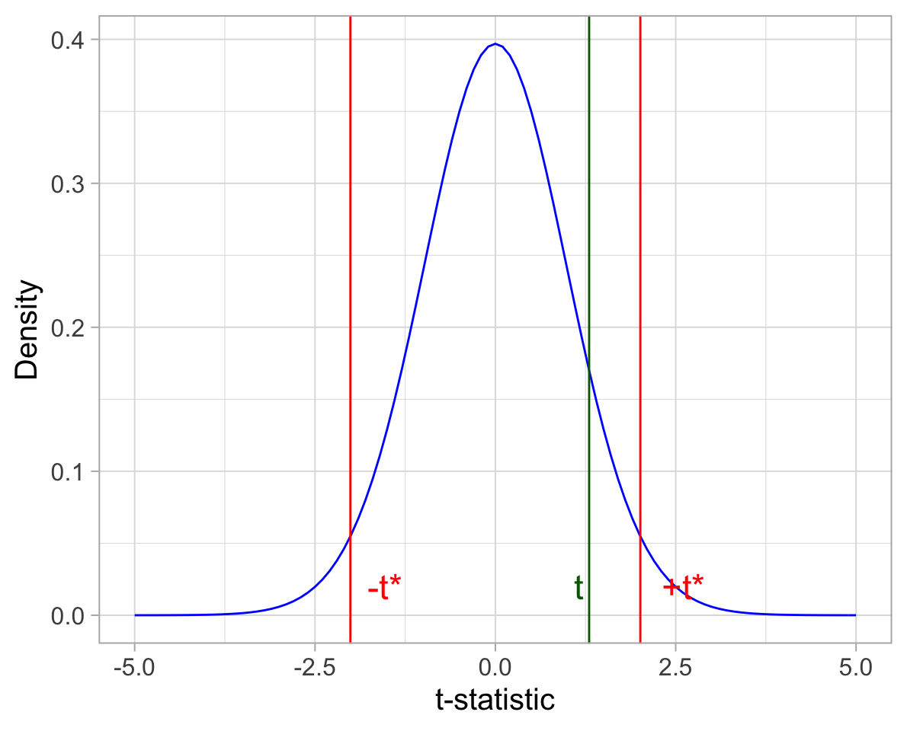

Hypothesis testing & Confidence intervals
Interpret a confidence interval as the plausible values of a parameter that would not be rejected in a two-sided hypothesis test.
Determine the decision for a two-sided hypothesis test from an appropriately constructed confidence interval.
Be able to explain the difference between a significant result and an important result.
Hypothesis testing
Consider the two-sided hypothesis testing case
\[ H_0 : \mu = \mu_0 \\ H_1 : \mu \neq \mu_0 \]
Where the test statistic used in order to test the above claim is:
\[ t = \frac{\bar x - \mu_0}{s / \sqrt{n}} \]
At the 5% significance level:
- we reject the null hypothesis \(H_0\) whenever the observed t-statistic lies beyond the critical values:
\[t \leq -t^* \qquad \text{or} \qquad t \geq +t^*\]

- we do not reject the null hypothesis \(H_0\) whenever the observed t-statistic lies within the critical values:
\[-t^* < t < +t^*\]

Confidence interval
A 95% confidence interval for the population mean is given by
\[\left[ \bar x - t^* \cdot \frac{s}{\sqrt n}, \ \ \bar x + t^* \cdot \frac{s}{\sqrt n} \right]\]
From HT to CI
In the hypothesis test, we do not reject the null hypothesis at the 5% significance level whenever \(\mu_0\) lies inside of the 95% CI:
\[ \textbf{Do not reject } H_0 : \mu = \mu_0 \textbf{ if} \\ \quad \\ -t^* < t < +t^* \\ -t^* < \frac{\bar x - \mu_0}{\frac{s}{\sqrt n}} < +t^* \\ -t^* \cdot \frac{s}{\sqrt n}< \bar x - \mu_0 < +t^* \cdot \frac{s}{\sqrt n} \\ -\bar x -t^* \cdot \frac{s}{\sqrt n}< - \mu_0 < -\bar x +t^* \cdot \frac{s}{\sqrt n} \\ \bar x + t^* \cdot \frac{s}{\sqrt n} > \mu_0 > \bar x - t^* \cdot \frac{s}{\sqrt n} \\ \bar x - t^* \cdot \frac{s}{\sqrt n} < \mu_0 < \bar x + t^* \cdot \frac{s}{\sqrt n} \\ \mu_0 \text{ inside of } \left[ \bar x - t^* \cdot \frac{s}{\sqrt n}, \ \ \bar x + t^* \cdot \frac{s}{\sqrt n} \right] \\ \mu_0 \text{ inside of 95% CI} \]
Exercises: Story Spoilers
In this week’s exercises we will consider ratings for stories with and without spoilers. At the 5% significance level, we will test the following claim:
Research question
Does having a story spoiled lead, on average, to a different rating?
A recent study by Leavitt et al.1 investigated whether a story spoiler that gives away the ending early diminishes suspense and hurts enjoyment. For twelve different short stories, the study’s authors created a second version in which a spoiler paragraph at the beginning discussed the story and revealed the outcome. Each version of the twelve stories was read by at least 30 people and rated on a 1 to 10 scale to create an overall rating for the story, with higher ratings indicating greater enjoyment of the story. Stories 1 to 4 were ironic twist stories, stories 5 to 8 were mysteries, and stories 9 to 12 were literary stories.
Read the data into R.
In the lectures you saw how to perform a test on the mean of a single variable.
How could you measure whether or not having a story spoiled leads to a different rating, on average, by using a single variable?
What feature do this data have that makes it possible to go from two variables to a single variable?
Compute a new variable, called Diff, representing the difference in ratings between the original and spoiler stories.
State the null and alternative hypothesis.
Compute a 95% confidence interval for the difference in ratings.
Using the 95% confidence interval, make a decision on whether or not to reject the null hypothesis.
Verify whether you would reach to the same conclusion if you perform a hypothesis test via the p-value method.
Write up your results.
References
Leavitt, J. and Christenfeld, N., “Story Spoilers Don’t Spoil Stories,” Psychological Science, August 12, 2011.↩︎